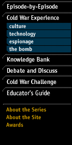
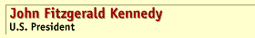

a 4.0 browser and requires javascript


One of the most charismatic U.S. presidents in history, John Kennedy was born on May 29, 1917, in Boston into a prominent, wealthy Irish Catholic family. His father, Joseph P. Kennedy, served as U.S. ambassador to Britain from 1938 to 1940. The time in Europe enabled John to write "Why England Slept," a best seller. Kennedy was a Harvard graduate, also having attended Choate Preparatory School. During World War II, he served in the Navy, commanding a PT boat that was sunk by the Japanese in 1943. His wartime experience led to another successful book and helped launch his political career. Probably as important in this regard were the political ambitions Joseph Kennedy had for his children. After the war death of his older brother Joe, John became the focus of his father's hopes, benefiting greatly from his contacts and money.
In 1946, Kennedy was elected to the House of Representatives. He posed as an anti-communist, conservative Democrat. In 1952, he defeated Henry Cabot Lodge in the race for the latter's Senate seat. As a senator, Kennedy did not build an impressive legislative record. By 1954, however, he began to speak out on foreign policy issues and in 1956 made his first bid for his party's presidential nomination.
In 1960 Kennedy again ran for president. He attacked the Eisenhower administration for lacking vigor in the contest with the Soviet Union. Kennedy defeated Eisenhower's vice president, Richard Nixon, in the closest presidential race in history. In the White House, Kennedy suffered some early setbacks, such as the failed Bay of Pigs operation and the tense Vienna meeting with Soviet leader Khrushchev. The early failures only added fuel to his administration's military buildup. The president wanted U.S. forces to be more diversified than they were under his predecessor, so as to acquire "flexible response" capability instead of having to rely on nuclear weapons.
Later in 1961 Kennedy appeared to be hitting his stride. In August he responded with restraint to the building of the Berlin Wall and the following year performed brilliantly during the Cuban Missile Crisis, the peaceful resolution of which is probably his greatest triumph. In 1963, the United States and Soviet Union agreed on a limited test ban treaty. Kennedy's legacy in Vietnam is more ambiguous. He increased the number of U.S. advisers from 700 to 15,000 and brought the conflict no closer to a resolution. In the domestic field Kennedy also grew while in office, eventually becoming quite supportive of the civil rights movement in the South. On November 22, 1963, Kennedy was assassinated by Lee Harvey Oswald during a visit to Dallas, Texas. He was 46.
|
Back to Top |
Back to Knowledge Bank |